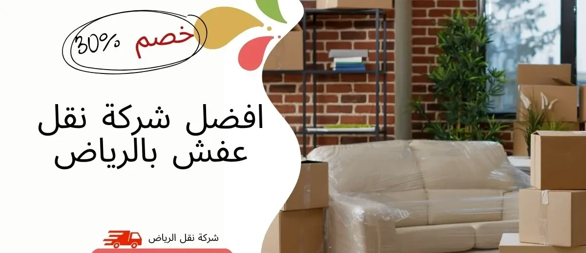

افضل شركة نقل عفش بالرياض 0559865517

عند التفكير في نقل الأثاث في المملكة، يقوم الكثير من الأشخاص بالبحث عن شركة تتمتع بالاحترافية والمصداقية لضمان عملية نقل آمنة وسلسة، حيث تعد افضل شركة نقل عفش بالرياض من العوامل الأساسية التي تساهم في راحة العملاء ونجاح عملية النقل بشكل صحيح، ومن بين العديد من الشركات التي تبرز هي شركة نقل الرياض التي توفر خدمات عالية الجودة وتعتبر الأفضل في هذا المجال، اليوم في هذه المقالة، سنتعرف على معايير اختيار افضل شركة نقل عفش بالرياض والخدمات التي تقدمها لضمان عملية نقل بدون مشاكل.
افضل شركة نقل عفش بالرياض
يعتمد اختيار افضل شركة نقل عفش بالرياض على مجموعة من المعايير الهامة، وهذا لضمان تقديم خدمات متميزة، فـ من أهم هذه المعايير الخبرة الكبيرة والكفاءة في التعامل مع جميع أنواع الأثاث، التي تبدأ من القطع الصغيرة إلى الكبيرة والثقيلة، كما أن الشركة تتمتع بخبرة واسعة في هذا المجال فـ هي قادرة على توفير فريق محترف يتقن فنون التفكيك والتركيب والنقل بأعلى درجات الأمان، بالإضافة إلى استخدام أحدث المعدات المميزة مثل السيارات المجهزة وأدوات الحماية التي تلعب دورًا مهمًا في ضمان أن الأثاث يصل إلى وجهته بأمان، كما تقدم الشركة أيضًا خدمة التعبئة الجيدة للأثاث باستخدام مواد عازلة ومضادة للصدمات، بالإضافة إلى ذلك يمكن أن توفر شركتنا تأمينًا للأثاث ضد أي ضرر قد يحدث أثناء النقل، وهذا ما يعزز من ثقة العملاء في خدماتها، لذلك عند اختيار شركة لنقل العفش في الرياض يجب مراعاة هذه الجوانب لضمان الحصول على أفضل خدمة بأعلى مستوى من الاحترافية.
نقل عفش بالرياض 200 ريال
هل تبحث عن خدمات نقل عفش بالرياض بأسعار معقولة تبدأ من 200 ريال، يمكنك الاعتماد على شركة نقل الرياض التي تقدم أفضل خدمات نقل عفش احترافية وبأسعار تنافسية وخصومات مميزة، تتميز الشركة بتقديم خدمات نقل متنوعة تتناسب مع احتياجات العملاء، حيث تقدم أسعارًا تنافسية في حدود 200 ريال لبعض خدمات النقل البسيطة، مثل نقل الأثاث داخل الأحياء القريبة أو الأثاث ذو الحجم المتوسط.
بالإضافة إلى أن التكلفة تتوقف على عدة عوامل، مثل حجم الأثاث، المسافة بين المواقع، والخدمات الإضافية مثل التغليف أو التفكيك والتركيب، لذلك إذا كنت تبحث عن نقل عفش بأسعار تبدأ من 200 ريال، فمن المهم أن تتواصل مع شركة نقل الرياض للحصول على عرض دقيق بناءً على احتياجاتك الخاصة، كما أن الشركة تتميز بتوفير معدات متخصصة وأفراد محترفين لضمان أن عملية النقل تتم بأمان وكفاءة، مما يجعلها خيارًا جيدًا لعمليات النقل الميسرة والفعالة.
افضل شركة نقل عفش خارج الرياض
عند البحث عن أفضل شركة نقل عفش خارج الرياض، تعتبر شركة نقل الرياض من أبرز الخيارات المتاحة. توفر الشركة خدمات نقل الأثاث عالية الجودة إلى مختلف مدن المملكة مثل جدة، الدمام، مكة، وغيرها من المدن الكبيرة. تتميز الشركة بخبرة واسعة في مجال النقل وتقديم خدمات شاملة تشمل التعبئة، التفكيك، والنقل بأمان تام. كما أنها تستخدم معدات حديثة وأسطول سيارات مجهز خصيصًا لضمان وصول الأثاث بأمان إلى وجهته. من أهم ما يميز شركة نقل الرياض هو فريق العمل المدرب الذي يضمن التعامل مع الأثاث بكل احترافية، سواء كانت القطع كبيرة أو صغيرة. كما تقدم الشركة خدمات تأمين على الأثاث أثناء النقل، مما يمنح العملاء راحة البال. بفضل سمعتها الممتازة في السوق، تعتبر شركة نقل الرياض خيارًا مثاليًا لأولئك الذين يحتاجون إلى خدمات نقل عفش آمنة وسريعة بأسعار معقولة.
شركات نقل العفش بين مدن المملكة
تعتبر شركات نقل العفش بين مدن المملكة من الخدمات الضرورية، التي تساهم في تسهيل عملية الانتقال بين المناطق المختلفة، كما أن شركة نقل الرياض تعد من أبرز الشركات المتخصصة في هذا المجال حيث نقدم خدمات نقل عفش بين الرياض وبقية مدن المملكة مثل جدة، الدمام، مكة وغيرها، حيث أننا نحن نضمن للعملاء خدمات عالية الجودة تتضمن التعبئة، التفكيك، والنقل باستخدام أسطول من السيارات المجهزة بأحدث التقنيات لضمان وصول الأثاث بأمان وسلامة، بالإضافة إلى فريقنا المحترف يحرص على تقديم خدمة سريعة وفعالة مع التأكد من الحفاظ على الأثاث من أي أضرار أثناء النقل.
أهمية التعامل مع شركة نقل بين مدن المملكة
يضمن لك التعامل مع شركة نقل الرياض توفير راحة البال أثناء عملية النقل، حيث تتمتع الشركة بسمعة قوية في تقديم خدمات موثوقة وآمنة بأسعار تنافسية، فـ نحن نركز على تقديم تجربة خالية من المتاعب للعملاء، من خلال ضمان الأثاث والتأكد من وصوله إلى وجهته في الوقت المحدد.
مميزات نقل عفش شرق الرياض
نقل العفش في شرق الرياض يتميز بالعديد من المزايا التي تجعله خيارًا مفضلًا للعديد من العملاء، من أبرز هذه المميزات:
سهولة الوصول والتوافر
تضم منطقة شرق الرياض العديد من الأحياء السكنية الكبيرة، مما يجعل شركات النقل قادرة على تقديم خدمات سريعة وفعالة للانتقال داخل المنطقة أو خارجها.
خبرة الشركات المحلية
شركات نقل العفش في شرق الرياض تتمتع بخبرة واسعة في التعامل مع الأثاث والأشياء الحساسة، مما يضمن نقل الأثاث بأمان وسلامة.
أسعار تنافسية
تقدم شركات النقل في شرق الرياض أسعارًا تنافسية مقارنة ببقية المناطق وخصومات تصل إلى 30%، مما يجعلها خيارًا اقتصاديًا للأفراد والعائلات.
معدات حديثة
تستخدم الشركات في شرق الرياض معدات حديثة مثل سيارات النقل المجهزة، ومواد التغليف الخاصة التي تضمن حماية الأثاث أثناء النقل.
خدمة العملاء المتميزة
تقدم شركات نقل العفش في هذه منطقة شرق الرياض دعمًا ممتازًا للعملاء، مع إمكانية تقديم استشارات وتوجيهات حول كيفية تحضير الأثاث للنقل بشكل صحيح.
باختيار أفضل شركات نقل العفش في شرق الرياض، يمكن للعملاء ضمان عملية نقل سريعة وآمنة وبتكلفة معقولة.
الأسئلة الشائعة حول افضل شركة نقل عفش بالرياض
ما هي ارخص شركة نقل اثاث بالرياض؟
تعتبر واحدة من ارخص شركات النقل في الرياض هي شركة نقل الرياض، على الرغم من إختلاف الأسعار بناءً على عدة عوامل مثل حجم الأثاث، المسافة بين الموقعين، وخدمات التعبئة والتغليف المقدمة، إلا أن شركتنا تقدم أسعارًا تنافسية مع الحفاظ على جودة الخدمة، بالإضافة إلى الخصومات التي تصل 30% ، فـ هي تساعد على تحديد الخيارات التي تناسب ميزانيتك.
بعض الشركات المعروفة في الرياض التي قد تقدم أسعارًا معقولة تشمل:
- شركة النخبة لنقل العفش: توفر خدمات بأسعار معقولة مع ضمان جودة النقل.
- شركة التميز لنقل العفش: تقدم عروضًا خاصة بأسعار مناسبة.
- شركة الرياض لنقل العفش: تتيح خيارات مرنة مع أسعار تنافسية.
يفضل دائمًا طلب عروض أسعار من عدة شركات ومقارنة الخدمات والأسعار لتحديد الأنسب لك.
هل يوجد شركات نقل عفش شمال الرياض؟
نعم، هناك العديد من شركات نقل العفش التي تقدم خدماتها في شمال الرياض، بما في ذلك شركة نقل الرياض، فـ هي واحدة من أفضل الخيارات المثالية لنقل الأثاث في المنطقة، كما أننا نوفر خدمات احترافية تشمل فك وتركيب الأثاث، تغليفه بأفضل المواد، ونقله باستخدام سيارات مجهزة خصيصًا لضمان سلامته أثناء النقل.
في النهاية تعتبر افضل شركة نقل عفش بالرياض، من أهم الشركات التي تتميز بالسرعة والكفاءة، حيث نغطي جميع الأحياء والمناطق في المملكة العربية السعودية، لذلك سواء كنت تنتقل داخل الرياض أو خارجها، فنحن هنا لتوفير حلولًا متكاملة تناسب احتياجاتك، مع ضمان تقديم أسعار تنافسية وخصومات مميزة وخدمة عملاء رائعة، قم باختيار شركة نقل الرياض لضمان تجربة نقل سلسة وآمنة.